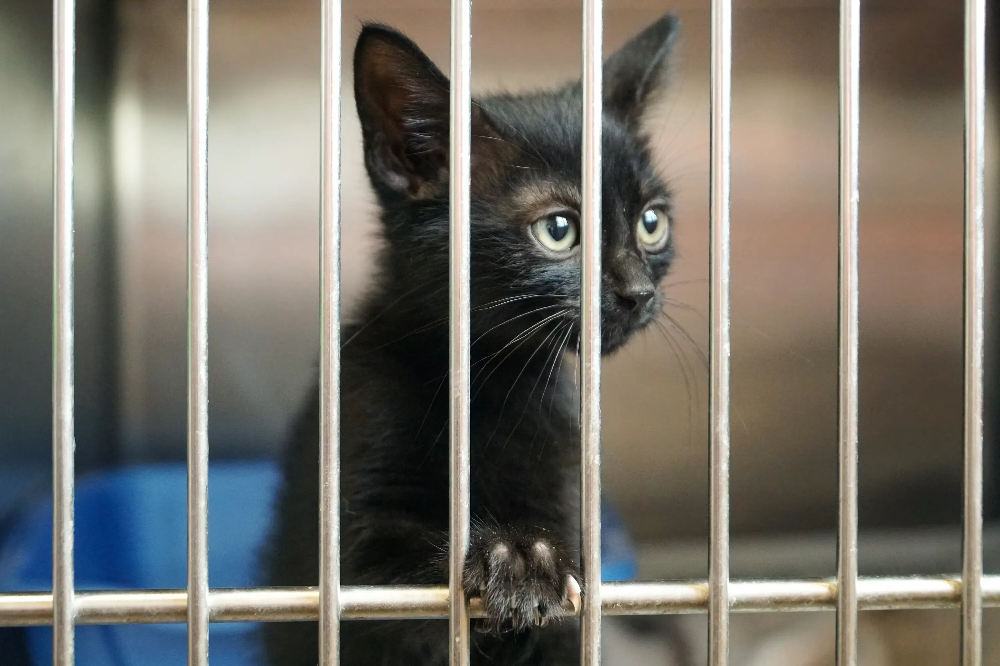

Historia del Fundador
Juan Pérez fundó esta protectora hace 10 años, motivado por el deseo de dar una segunda oportunidad a los animales abandonados de nuestra ciudad.

Nuestra Protectora
Desde 2016, nuestra misión es rescatar, rehabilitar y buscar familias responsables para cada mascota que llega a nuestras instalaciones.
